キングアマンの倉庫大放出
ギラン城下町に配置されているNPC「アマン」にて、アデナを使用して各アイテムの確率/確定製作に挑戦することができます。
2026年02月19日(木) 定期メンテナンス終了時 ～ 2026年03月04日(水) 定期メンテナンス開始時
初出 2026/2/20
| アイテム名 | 画像 | 製作可能数 | 必要アデナ | 交換アイテム説明 |
|---|---|---|---|---|
| アンシャルの伝説魔法研磨書 ※20:00～22:00のみ製作に挑戦可能 | 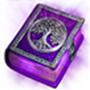 | 全ワールド合計5回 | 10,000,000 | スキル研磨に必要なアイテムです。 スキル研磨システムはパワーウィキをご確認ください。 |
| アンシャルの英雄魔法研磨書(刻印) ※20:00～22:00のみ製作に挑戦可能 | 全ワールド合計5回 | 5,000,000 | スキル研磨に必要なアイテムです。 スキル研磨システムはパワーウィキをご確認ください。 | |
| 魔神の証 10個 ※20:00～22:00のみ製作に挑戦可能 | 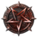 | 全ワールド合計100回 | 10,000,000 | 傲慢の塔地下神殿の隠れモンスターを倒すと一定確率で獲得できます。 狂信者の十字架1～8段階、魔神の十字架、祝福された魔神の十字架の聖物製作材料です。 |
| 守護者のフィスト(刻印) | 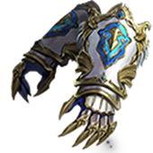 | 全ワールド合計5個 | 3,000,000 | |
| ケプリシャのオラクル | アカウントあたり4回 | 1,000,000 | ||
| 英雄の武器精錬石箱 | 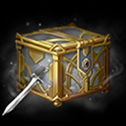 | アカウントあたり4回 | 500,000 | |
| パンドラの保護強化スクロール | 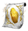 | アカウントあたり5回 | 2,000,000 | |
| ドラゴンの高級ダイアモンド(刻印) | アカウントあたり5回 | 700,000 | ||
| アマンの勇猛のメダル箱 | 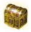 | アカウントあたり1回 | 500,000 | 使用時、勇猛のメダル 100個を獲得します。 |
| ピュア エリクサー | アカウントあたり2回 | 500,000 | ||
| エリクサー(EXP) | 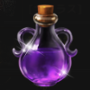 | アカウントあたり2回 | 500,000 | |
| ドラゴンキー(ハルパス) ※20:00～22:00のみ製作に挑戦可能 | 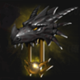 | 全ワールド合計3回 | 50,000,000 | |
| 職人の防具強化スクロール ※20:00～22:00のみ製作に挑戦可能 | 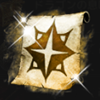 | 全ワールド合計100回 | 10,000,000 | |
| ドラゴンの息吹選択箱 ※20:00～22:00のみ製作に挑戦可能 | 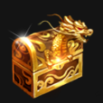 | 全ワールド合計200回 | 10,000,000 | パプリオン/アンタラス/リンドビオル/ヴァラカスの心臓から1つを選択して獲得することができます。 |
| 傲慢の血痕選択箱 ※20:00～22:00のみ製作に挑戦可能 | 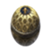 | 全ワールド合計100回 | 10,000,000 | 傲慢の血痕箱(1～10階)から1つを選択して獲得することができます。 |
| 傲慢の血痕箱(1階) | 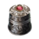 | 使用時、ゼニス クイーンの血痕 10～100個を確率で獲得します。 | ||
| 傲慢の血痕箱(2階) | 使用時、シアーの血痕 10～100個を確率で獲得します。 | |||
| 傲慢の血痕箱(3階) | 使用時、バンパイアの血痕 10～100個を確率で獲得します。 | |||
| 傲慢の血痕箱(4階) | 使用時、ゾンビロードの血痕 10～100個を確率で獲得します。 | |||
| 傲慢の血痕箱(5階) | 使用時、クーガーの血痕 10～100個を確率で獲得します。 | |||
| 傲慢の血痕箱(6階) | 使用時、マミーロードの血痕 10～100個を確率で獲得します。 | |||
| 傲慢の血痕箱(7階) | 使用時、アイリスの血痕 10～100個を確率で獲得します。 | |||
| 傲慢の血痕箱(8階) | 使用時、ナイトバルドの血痕 10～100個を確率で獲得します。 | |||
| 傲慢の血痕箱(9階) | 使用時、リッチの血痕 10～100個を確率で獲得します。 | |||
| 傲慢の血痕箱(10階) | 使用時、ウグヌスの血痕 10～100個を確率で獲得します。 | |||
| ポルセの剣(刻印) | 全ワールド合計5回 | 3,000,000 | ||
| ナイトバルドのツーハンド ソード(刻印) | 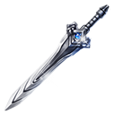 | 全ワールド合計5回 | 3,000,000 | |
| 悪夢のロング ボウ(刻印) | 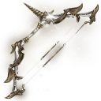 | 全ワールド合計5回 | 3,000,000 | |
| ゼロスのスタッフ(刻印) | 全ワールド合計5回 | 3,000,000 | ||
| 咆哮のデュアルブレード(刻印) | 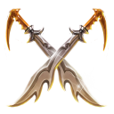 | 全ワールド合計5回 | 3,000,000 | |
| 震怒のクロウ(刻印) | 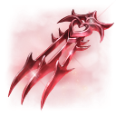 | 全ワールド合計5回 | 3,000,000 | |
| 殲滅者のチェーンソード(刻印) | 全ワールド合計5回 | 3,000,000 | ||
| 殺意のキーリンク(刻印) | 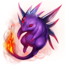 | 全ワールド合計5回 | 3,000,000 | |
| テンペスト アックス(刻印) | 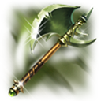 | 全ワールド合計5回 | 3,000,000 | |
| デューク デフィルのソード(刻印) | 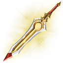 | 全ワールド合計5回 | 3,000,000 | |
| 指揮官のスピアー(刻印) | 全ワールド合計5回 | 3,000,000 | ||
| 混沌の傲慢の塔1階テレポートアミュレット ※20:00～22:00のみ製作に挑戦可能 | 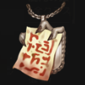 | 全ワールド合計100回 | 500,000 | |
| 混沌の傲慢の塔2階テレポートアミュレット ※20:00～22:00のみ製作に挑戦可能 | 全ワールド合計100回 | 500,000 | ||
| 混沌の傲慢の塔3階テレポートアミュレット ※20:00～22:00のみ製作に挑戦可能 | 全ワールド合計100回 | 500,000 | ||
| 混沌の傲慢の塔4階テレポートアミュレット ※20:00～22:00のみ製作に挑戦可能 | 全ワールド合計100回 | 700,000 | ||
| 混沌の傲慢の塔5階テレポートアミュレット ※20:00～22:00のみ製作に挑戦可能 | 全ワールド合計100回 | 700,000 | ||
| 混沌の傲慢の塔6階テレポートアミュレット ※20:00～22:00のみ製作に挑戦可能 | 全ワールド合計100回 | 700,000 | ||
| 混沌の傲慢の塔7階テレポートアミュレット ※20:00～22:00のみ製作に挑戦可能 | 全ワールド合計100回 | 700,000 | ||
| 混沌の傲慢の塔8階テレポートアミュレット ※20:00～22:00のみ製作に挑戦可能 | 全ワールド合計100回 | 1,000,000 | ||
| 混沌の傲慢の塔9階テレポートアミュレット ※20:00～22:00のみ製作に挑戦可能 | 全ワールド合計100回 | 1,000,000 | ||
| 混沌の傲慢の塔10階テレポートアミュレット ※20:00～22:00のみ製作に挑戦可能 | 全ワールド合計100回 | 1,000,000 |